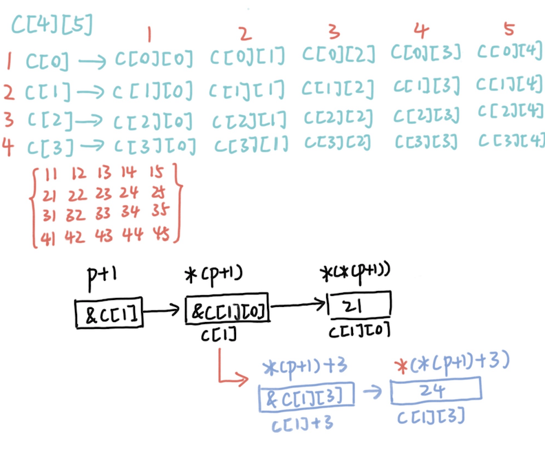
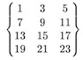

1. 选填 19年 选择
已知float a; int b=1; 执行语句”a=b++/3”后，变量a的值是 D
1 2 3 4 float a; int b=1 ; a=b++/3 ; 输出为0.000000 -> 等价于a=(float )(b++/3 ); a=b++/3.0 ; 输出为0.333333 a=(float )b++/3 ; 输出为0.333333
表达式8 / 4 * (int)2.5 / (int)(1.25 * (3.7+2.3)) 值的数据类型为 A
考点：不同数据类型间的混合运算[自动转换/强制转换 ]
(int)(表达式) 表示将括号内的表达式的数据类型强制转换 为int型。
两个int型相除，不管是否有余数，结果都为整型。
以下描述中正确的是 C (但其实4个选项都不对系列)
考点：do-while循环的使用
A 循环体内可以使用复合语句
B do-while在while(表达式)后面必须写分号
C 只要循环体内有break即可，不在乎表达式的内容。[只能勉强选了]
D do-while循环是一个整体，不能省略while
为了判断两个字符串s1和s2是否相等，应当使用 D
1 2 3 4 5 6 7 8 9 10 puts (str); 输出字符串gets(str); 输入字符串 strcat (str1, str2); 将str2放到str1后面，str1的'\0' 取消[str1足够大]strcpy (str1, str2); 字符数组无赋值语句，用字符串复制函数strncpy (str1, str2, n); 将str2的前n个字符复制到str1中去strcmp (str1,str2); 自左向右比较两字符串直到出现不同或遇到'\0' 比较的是同位置的字符ascii值大小，返回正，0 ，负。 strlen (str); 返回str数组长度(不包括'\0' 在内)strlwr(str); 将str中大写字母换成小写字母 strupr(str); 将str中小写字母换成大写字母
下面程序片段（字符串内没有空格字符）的输出结果是 C
1 2 3 '\0' 表示空字符 '\\' 表示字符 \'\a' 警告 '\'' 表示字符 ''\r' 回车 '\n' 换行
下列程序是求1到100的累加和，其中有1个不能够完成规定的功能，是 B
1 2 3 4 A) int s=0 ,i=1 ; B) int s=0 ,i=1 ; while (i<=100 )s+=i++; while (i++<100 )s+=i; C) int s=0 ,i=0 ; D) int s=0 ,i=0 ; while (i<100 ) s+=++i; while (++i<=100 )s+=i;
考点：while循环的流程+前缀/后缀自加
根据C语言规定，可知以下不正确的说法是 B
考点：实参与形参的区别与联系
若有以下说明语句，其中只有( )能获取到c数组的元素的值
考点：数组指针(行指针)与二维数组
p是一个指针，指向一个整型的一维数组，这个一维数组的长度是5，也可以说是p的步长。也就是说执行p+1时，p要跨过5个整型数据的长度。
间接访问：指针变量存放变量i的地址，通过指针找到变量i的地址从而访问变量i。
指针不等于指针变量。 一个变量的地址称为该变量的指针，指针变量是存放地址的变量 。在二维数组c[ 4 ] [ 5 ]中，c[0]，c[1]，c[2]，c[3]被看作一维数组名 ，即指向对应行首元素的指针。
‘ & ‘是取地址符号，取得某一个变量的地址；如：&a
‘ * ‘ 是指针运算符，可以表示一个变量是指针类型；也可以表示一个指针变量的所指向的存储单元，获取某个地址存储的值。
A：p+1是指向c[1]的指针。c[1]本身又是指向c[ 1 ] [ 0 ]的指针，存放的是c[ 1 ] [ 0 ]的地址。* (p+1)可以获得c[1]的值即&c[ 1 ] [ 0 ]，* ( * (p+1))即为c[ 1 ] [ 0 ]的值。
1 2 3 4 5 6 7 int c[4 ][5 ]={{11 ,12 ,13 ,14 ,15 },{21 ,22 ,23 ,24 ,25 }, {31 ,32 ,33 ,34 ,35 },{41 ,42 ,43 ,44 ,45 }};int (*p)[5 ];p=c; 将c的首元素地址c[0 ][0 ]赋值给p printf ("%d\n" , *(*(p+1 ))) 21 printf ("%d\n" , *(*(p+3 ))); 输出41 printf ("%d\n" , *(*(p+1 )+3 )); 输出24 printf ("%d\n" , *(*p+2 )); 输出13
下列程序的输出结果是 A
1 2 3 4 5 6 #include <string.h> void main () char *s1="ABCdEf" , *s2="aB" ; s1++;s2++; printf ("%d\n" ,strcmp (s1,s2)); }
A) 正数 B) 负数 C) 零 D) 不确定的值
考点：字符串处理函数与大小写字母Ascii值关系
以下scanf函数调用语句中对结构体变量成员的不正确引用是 D
1 2 3 4 struct pupll { char name[20 ];int age; int sex; }pup[5 ],*p; p=pup;
A) sancf(“%s”, pup[0].name) B) scanf(“%d”, &pup[0].age)
考点：结构体变量 / 结构体数组 的初始化与引用 P297， 指向结构体的指针 P303
“ . “运算符是成员运算符，它在所有运算符中优先级最高。
填空/程序阅读题
下列程序的输出结果是 yes
1 2 3 char c = 'A' ;if ('0' <= c || c <= '9' ) printf ("yes" ); 注意这里是 "||" 不是 "&&" else printf ("no" );
若运行时输入：-2<回车>，则以下程序的输出结果为 2
1 2 3 4 int a, b;scanf ("%d" , &a);b = (a>=0 )? a:-a; printf ("b=%d" ,b);
程序读入20个整数，统计非负数个数，并计算负数之和，请在【 】处填入适当内容。
1 2 3 4 5 6 7 8 9 int i, a[20 ], sum, count;sum = count = 0 ; for (i=0 ; i<20 ; i++) scanf ("%d" ,&a[i]);for (i=0 ; i<20 ; i++){ if (【 a[i]>=0 】){ 【 sum += a[i] 】; count++; } }
gets()函用来从标准输入设备读入一个字符串， puts() 函数用来从标准输入设备输出一个字符串。putchar()函数是用来向输出设备输出一个字符，而 getchar() 函数用来从输入设备读取一个字符。
下面程序的功能：输出100以内能被3整除且个位数为6的所有整数。请在【 】处填入适当内容。
1 2 3 4 5 6 int i,j;for (i=0 ;【i<10 】; i++){ j = i*10 +6 ; if (【 j%3 != 0 】)continue ; 提前结束本次循环，进入下一次循环 printf ("%d" ,j); }
若一个外部变量的定义形式为static int x; 那么，其中static的作用应该是 使x只能在本文件内引用
下面程序的输出结果是：1,2,3,
1 2 3 4 5 6 7 8 9 void add () static int x = 0 ; x++;printf ("%d," ,x); } int main () int i; for (i=0 ; i<3 ; i++)add(); return 0 ; }
P206 x 是静态局部变量，在add()调用结束后，它并不释放，保留其当前值。 在编译时赋初值，且只赋初值一次 。
自动变量：在函数调用时赋初值。
当从键盘输入18时，程序运行后变量i的最终值为 5 ，程序的运行结果是 10010 。
1 2 3 4 5 6 7 int x,y,i = 0 ,j,u,v,a[8 ];scanf ("%d" ,&x);y = x; do { u = y/2 ; a[i] = y%2 ; i++; y = u; }while (y>=1 ); for (j=i-1 ; j>=0 ; j--)printf ("%d" , a[j]); a[5 ]->a[0 ]输出
下面程序的输出结果是： 5
1 2 3 4 5 6 7 8 9 void fun (int *p) int b = 10 ; b--; p = &b; } void main () int a = 5 , *p = &a; fun(p); printf ("%d\n" , *p); }
考点：按值传递和按指针传递 + 指针变量作为函数参数 P229
实参和形参之间数据传的是单向的。用指针变量作函数参数同样遵循这一规则。不可能通过调用函数来改变实参指针变量的值，但可以改变实参指针变量所指向变量的值 。
int * p = &a只有在定义的时候初始化是这样写，否则写成int * p, p = &a
1 2 3 4 5 6 7 8 9 10 11 void swap_fail (int *p1, int *p2) int *p; p = p1; p1 = p2; p2 = p; } void swap_success (int *p1, int *p2) int *p; *p = *p1; *p1 = *p2; *p2 = *p; p1 p2所指向的地址没变。但对应地址所存放的值交换了。 }
下面程序用变量count统计文件中字符的个数。请在【 】处填入适当内容。
1 2 3 4 5 6 7 8 9 10 11 12 #include <stido.h> int main () FILE *fp; long count = 0 ; if ((fp=fopen("letter.dat" ,"r" )) == NULL ){ printf ("cannot open file\n" );exit (0 ); } while (!feof(fp)){ 【 fgetc(fp) 】;【 count++ 】;}; printf ("count=%ld\n" ,count); fclose(fp); return 0 ; }
feof()函数用来检测当前文件流上的文件结束标识，判断是否读到了文件结尾：
int fgetc (FILE * stream) 从指定的流 stream 获取下一个字符（一个无符号字符），并把位置标识符往前移动 。
18年
宏替换 不占用运行时间，只占用编译时间 √(区别：宏定义&宏替换)逗号表达式 ：从左往右执行，但最后只输出最右部分的内容指针的自增运算
选项ABCD都是逗号表达式，选项内不是并列的关系。
++a，在使用a之前，先使a的值加1，再使用a。
解引用的优先级低于后缀 + + 操作符， * p+ + 等同于 * (p++)，它自增p并返回p 自增之前所指向的值。要自增 p 指向的值, 使用 ( * p)+ + , 如果副作用的顺序无关紧要也可以使用 ++ * p。
自动型(auto)变量存储在动态存储区，分配在内存的堆栈区；静态局部变量存储在静态存储区；寄存器存储在CPU的寄存器中。（P204)
程序代码区：存放函数体的二进制代码。
静态数据区：也称全局数据区，包含的数据类型比较多，如全局变量、静态变量、一般常量、字符串常量
17年
关键字：while, case, char, if(不等于IF C语言严格区分大小写)C语言32个关键字
C语言标准库函数：getc, printf, sancf, pow
宏包含预处理指令：include
宏定义预处理指令：define
scanf中“%3d”代表：输入的数据的域宽为3列区域(靠右)，域宽应为正整数。严格对应 。 -P77-
指定数据宽度和小数位数，用%m.nf
f 格式符：以小数形式输出实数，不指定输出数据的长度，由系统处理。
系统一般是输出实数中的全部整数部分+6位小数部分。
若int型数据在内存中占2个字节，则unsigned int型数据的取值范围0-655352^16 - 1 = 65535 2^8-1=32767
计算a、b中最小值的条件表达式为a=(a>b?) b:a
2. 编程题(手写代码) 19年
编程将1、2、3、4四个数字所组成的互不相同且无重复数字的三位数全部找出来。
1 2 3 4 5 6 7 8 9 10 11 12 13 14 15 16 17 18 19 20 21 22 23 24 25 26 27 28 #include <stdio.h> #define N 1000 int main () int a[N]; int i,j,k, count = 0 ; for (i=1 ;i<=4 ;i++) { for (j=1 ;j<=4 ;j++) for (k=1 ;k<=4 ;k++) { if (i!=j && j!=k && k!=i) { printf ("%5d" ,100 *i+10 *j+k); count++; } } printf ("\n" ); } printf ("The total number is: %d " , count); return 0 ; } 输出为: 123 124 132 134 142 143 213 214 231 234 241 243 312 314 321 324 341 342 412 413 421 423 431 432 > The total numbers: 24
设计程序将二维数组a中的n个整数按相反顺序存放，即定义一个数组a并附初值a[ 4 ] [ 3 ] =
1 2 3 4 5 6 7 8 9 10 11 12 13 14 15 16 17 18 19 20 21 22 23 24 25 26 27 28 29 30 31 32 33 34 35 36 37 38 39 40 41 42 43 44 45 46 47 48 49 50 51 52 53 54 #include <stdio.h> void putarray ( int *p) int i,j; for (i=0 ;i<4 ;i++) { for (j=0 ;j<3 ;j++) { printf ("%5d" ,*(p+3 *i+j)); } printf ("\n" ); } } void sort (int *p) int i,j; int temp = 0 ; for (i=0 ;i<11 ;i++) { for (j=0 ;j<11 -i;j++) { if (*(p+j)< *(p+j+1 )) { temp = *(p+j); *(p+j) = *(p+j+1 ); *(p+j+1 ) = temp; } } } } int main () int a[4 ][3 ] = {{1 ,3 ,5 }, {7 , 9 , 11 }, {13 , 15 , 17 }, {19 , 21 , 23 }}; int *p =a[0 ]; putarray(p); sort(p); putarray(p); return 0 ; } 输出为： 1 3 5 7 9 11 13 15 17 19 21 23 23 21 19 17 15 13 11 9 7 5 3 1
请编写一个函数fun()，它的功能是：比较两个字符串的长度，(不得调用C语言提供的求字符串长度函数)，函数返回较长的字符串。若两个字符串长度相等，则返回第1个字符串。例如，输入beijing<回车>shanghai<回车>，函数将返回shanghai
1 2 3 4 5 6 7 8 9 10 11 12 13 14 15 16 17 18 19 20 21 22 23 24 25 26 27 28 29 30 31 32 33 34 35 36 37 #include <stdio.h> char * fun (char *p, char *q) int len1 = 0 , len2 = 0 ; char *str1=p, *str2=q; while (*str1 != '\0' ) { len1++; str1++; } while (*str2 !='\0' ) { len2++; str2++; }; if (len1 >= len2) return p; else return q; } int main () char a[20 ], b[20 ]; printf ("Input 1st string:" ); gets(a); printf ("Input 2ed string:" ); gets(b); printf ("%s" , fun(a,b)); return 0 ; } 输出为： Input 1 st string :beijing Input 2 ed string :shanghai shanghai Input 1 st string :123 Input 2 ed string :abc 123
18年
请编写函数void fun(char* s) ，函数的功能是：在字符串中所有数字字符前加一个$字符。例如，输入：A1B23CD45，则输出为：A1B$2$3CD$4$5。
1 2 3 4 5 6 7 8 9 10 11 12 13 14 15 16 17 18 19 20 21 22 23 24 #include <stdio.h> #include <string.h> #include <stdlib.h> void fun (char * s) char *p = (char *)malloc (2 *strlen (s)); for (int i = 0 ,j=0 ;i<strlen (s);i++,j++) { if (s[i] >= '0' && s[i] <= '9' ) { p[j] = '$' ; j++; } p[j] = s[i]; } printf ("%s \n" ,p); free (p); } int main () char s[20 ] = {"ada12j213" }; fun(s); return 0 ; }
请编写一个函数double fun(double h)，函数的功能是对变量h中的值保留2位小数，并对第三位进行四舍五入。例如：h值位8.32433，则函数返回8.32；h的值为8.32533，则函数返回8.33。
1 2 3 4 5 6 7 8 9 10 11 12 13 14 15 #include <stdio.h> double fun (double h) double b = (int )(h*100 )/100.0 ; if ((int )(h*1000 )%10 >= 5 ) b = (int )(h*100 +1 )/100.0 ; return b; } int main () double a; scanf ("%lf" , &a); printf ("%lf" ,fun(a)); return 0 ; }
17年
什么是全局变量和局部变量？局部变量有哪几种存储类型？
局部变量的存储类型：auto，static，register
C语言中，函数参数的传递有哪几种方式，各自的特点是什么？
值传递：函数调用中发生的数据传递 是单向 的，只能把实参的值传递给形参，而不能把形参的值反向地传递给实参。形参的值发生改变 并不会影响实参 。
地址(指针)传递：将函数外部的地址 传递到函数内部，使得在函数内部可以操作函数外部的数据，并且这些数据不会随着函数的结束 而被销毁 。
引用传递：调用函数时，将实参的地址 传递到函数中，在函数中对参数所进行的修改将影响到实参 。
简要说明关键字static的作用。
修饰变量。 变量又分为局部和全局变量。静态全局变量 ：在函数体之外定义，作用域仅限于变量被定义的文件。静态局部变量 ：在函数体里定义，只能在这个函数里使用。在静态存储区内分配存储单元，所以函数调用结束后值不会被销毁。修饰函数。 函数前加static 使得函数成为静态函数。
用C语言编写一个程序，从data.txt读入整数n后，从内存中分配存储n个双精度实数的存储空间(动态数组)，再从文件 data.txt中读入n个实数存放到这个动态数组中，然后求该数组的平均值。最后，释放动态数组、关闭文件和打印平均值。
1 2 3 4 5 6 7 8 9 10 11 12 13 14 15 16 17 18 19 20 21 22 23 24 25 26 27 #include <stdio.h> #include <stdlib.h> int main () FILE *fp; float sum, avg, *arr; int n, i; if ((fp=fopen("data.txt" ,"r" )) == NULL ) { printf ("can't open the file" ); return 0 ; } fscanf (fp, "%d" , &n); arr = (float *)malloc (n*sizeof (float )); for (i = 0 ; i < n; i++) { fscanf (fp,"%f" , &arr[i]); sum += arr[i]; } avg = sum / n; printf ("avg is %f" ,avg); free (arr); fclose(fp); return 0 ; }
用C语言编写函数int fun(char s[], char c)，函数的功能是从字符串s中删除指定的字符。同一字母的大、小写按不同字符处理。例如，当程序执行时，输入字符串为”turbo C and borland c++”，从键盘输入字符’n’，则输出后变为“turbo C ad borlad c++”。要求写出调用该函数的主函数。
1 2 3 4 5 6 7 8 9 10 11 12 13 14 15 16 17 18 19 20 21 22 23 24 25 26 27 28 29 #include <stdio.h> void fun (char s[], char c) int i = 0 ; char *p; p = s; while (*p) { if (*p != c) { s[i] = *p; i++; } p++; } s[i] = '\0' ; } int main () char s[20 ], c; printf ("please enter the string\n" ); gets(s); printf ("please enter the char that will be deleted.\n" ); c = getchar(); fun(s, c); printf ("%s\n" ,s); return 0 ; }